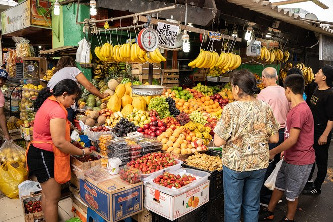

EXPERIENCIA 01
Taller Gastronómico
Descubre los sabores del Perú mediante una experiencia práctica guiada por un chef profesional. La actividad comienza con una visita a un mercado local y continúa con la preparación de un menú tradicional.
USD 75 por persona
Duración: 3–4 horas
Qué incluye
- Visita a mercado local
- Clase práctica con chef profesional
- Ingredientes y utensilios
- Preparación y degustación del menú
- Bebida de bienvenida de cortesía, adicional al cóctel
- Cóctel preparado por el participante: Pisco Sour o Chilcano
- Menú: ceviche, lomo saltado o ají de gallina y fondue de chocolate
Alternativas vegetarianas disponibles previa coordinación.